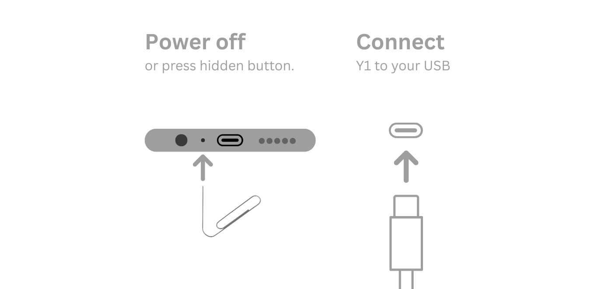

Inniclassic · Innioasis Y2
Install Inniclassic on a Y2.
Inniclassic has a dedicated Y2 port maintained by Jonasz Potoniec. Select Y2 before choosing it so the release list stays model-aware.
Install it
- Open Innioasis Updater CE on your computer (if you don't have it yet, Get Updater CE). Select Y2 in Device Model.
- Choose Inniclassic in Software (or launch with Get this in Updater CE).
- Select a release and click Install / Restore.
- Power off and connect the Y2 only when Updater prompts you.
- Use Y2 Original Software for the restore path.
Keep the connection still

Y2 packages use rom_y2.zip. If installation fails, note whether the failure happened before or after Updater detected the player.